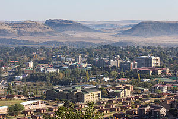

Economy of Lesotho
|  Maseru, the economic hub of Lesotho | |
| Currency | Lesotho Loti |
|---|---|
| 1 April - 31 March | |
Trade organisations | WTO, SACU, SADC |
Country group | |
| Statistics | |
| GDP | $2.13 billion nominal (2010 est.) $2.73 billion (2019) |
GDP growth |
|
GDP per capita | $1,670 Purchasing Power Parity (PPP) (2011 est.) |
| 3.1% (2010 est.) | |
Population below poverty line | 40% |
Labour force | 855,000 (2007) |
Labour force by occupation | agriculture: About 80% of the resident population are engaged in subsistence agriculture; roughly 20% of the formal wage earners (about 200,000) work (mainly males) in South Africa, 20% of the workers (mainly females) are in the apparel industry in Lesotho, and 20% are employed by the Government of Lesotho. The others are employed in services and other manufacturing (2008). |
| Unemployment | 24%-28% |
Main industries | food, beverages, textiles and apparel, handicrafts, construction, tourism, mining |
| External | |
| Exports | $1,043 million f.o.b. (2010 est.) |
Export goods | Garments 53% , other including diamonds 47% (2008) |
Main export partners | SACU 19% (2007) |
| Imports | $1,766 million c.i.f. (2010 est.) |
Import goods | food, building materials, vehicles, machinery, medicines, petroleum products, inputs to the apparel industry (2010) |
Main import partners | SACU 85% |
| Public finances | |
| $647 million (33% of GDP) (31 December 2010 est.) | |
| Revenues | $1,232 million (57% of GDP) (2009/10) |
| Expenses | $1,168 million (2009/10) |
All values, unless otherwise stated, are in US dollars. | |
{kind=link}
The economy of Lesotho is based on tourism, manufacturing, mining, and agriculture, and depends heavily on remittances from its diaspora.[4][5] Lesotho, a lower middle income country, is geographically surrounded by South Africa and is economically integrated with it as well. A significant portion of the population subsists on farming with a gradual ongoing transition into tourism and manufacturing.
Lesotho is a member of the Southern African Customs Union (SACU) in which tariffs have been eliminated on the trade of goods between the other member countries, Botswana, Namibia, South Africa, and Eswatini. Lesotho, Eswatini, Namibia, and South Africa also form a common currency and exchange control area known as the Rand Monetary Area that uses the South African rand as the common currency. In 1980, Lesotho introduced its own currency, the loti (plural: maloti). One hundred lisente equal one loti. The Loti is at par with the rand.
Economic history
[edit]Until the political insecurity in September 1998, Lesotho's economy had grown steadily since 1992. The riots, however, destroyed nearly 80% of commercial infrastructure in Maseru and two other major towns in the country, having a disastrous effect on the country's economy. Nonetheless, the country has completed several IMF Structural Adjustment Programs, and inflation declined substantially over the course of the 1990s. Lesotho's trade deficit, however, is quite large, with exports representing only a small fraction of imports.
The global economic crisis hit the Lesotho economy hard through loss of textile exports and jobs in the sector due largely to the economic slowdown in the United States which is a major export destination, reduced diamond mining and exports, including weak prices for diamonds; drop in SACU revenues due to the economic slowdown in the South African economy, and reduction in worker remittances due to weakening of the South African economy and contraction of the mining sector and related job losses in South Africa. In 2009, GDP growth slowed to 0.9 percent.[4]
Economic progress
[edit]Lesotho's progress in moving from a predominantly subsistence-oriented economy to a lower middle income, diversified economy exporting natural resources and manufacturing goods has brought higher, more secure incomes to a significant portion of the population. The percentage of the population living below USD PPP US$1.25/day fell from 48 percent to 44 percent between 1995 and 2003.[4] The unemployment rate in 2008 was 25.29% and rose to 27.2% in 2012. However, the unemployment rate fell to 23.06% in 2017. The percentage of the population living below the poverty line fell from 58% in 2002 to 49.2% in 2017.[6] The country is still among the "Low Human Development" countries (rank 155 of 192) as classified by the UNDP, with 42.3 years of life expectancy at birth. However, adult literacy is very high - 82% and children under weight aged under 5 is only 20%.[7]
Lesotho has received economic aid from a variety of sources, including the United States, the World Bank, the United Kingdom, the European Union, and Germany.
Lesotho has nearly 6,000 kilometers of unpaved and modern all-weather roads. There is a short rail line (freight) linking Lesotho with South Africa that is totally owned and operated by South Africa.
Sectors
[edit]Apparel
[edit]Lesotho has taken advantage of the African Growth and Opportunity Act (AGOA) to become the largest exporter of garments to the US from sub-Saharan Africa.[8] American Brands and retailers sourcing from Lesotho include: Foot Locker, Gap, Gloria Vanderbilt, JCPenney, Levi Strauss, Saks, Sears, Timberland and Wal-Mart.[9] In mid-2004 its employment reached over 50,000 mainly female workers, marking the first time that manufacturing sector workers outnumbered government employees. In 2008 it exported 487 million dollars mainly to the United States. Since 2004 employment in the sector was somehow reduced to about 45,000, in mid-2011, due to intense international competition in the garment sector. It was the largest formal sector employer in Lesotho in 2011.[10] The sector initiated a major program to fight HIV/AIDS, called Apparel Lesotho Alliance to Fight AIDS (ALAFA). It is an industry-wide program providing prevention and treatment for the workers.[11]
Husbandry
[edit]{kind=link}
The western lowlands form the main agricultural zone. Almost 50% of the population earn income through informal crop cultivation or animal husbandry with nearly two-thirds of the country's income coming from the agricultural sector. About 70% of the population lives in rural areas and works in agriculture.[12]
Women in the economy
[edit]Women make up 51% of Lesotho's population. While women are more subject to access to secondary schooling than men, men make 1.5 times more income than women.[13] Prior to the 1950s, Basotho women migrated to South Africa for work due to an agricultural decline. Of those who migrated, many of them were unwed and many stayed in South Africa. Married couples also traveled to South Africa together for work. In 1923, the pass law Natives (Urban Areas) Act was passed in South Africa which required black men to carry passports with them at all times when in white areas for work. Women were included in an amendment to the law in 1952. The amendment caused a decline in migration of female labor, and by the 1970s, only 36.1% of women over age 39 in Lesotho had worked in South Africa.[14] Lesotho women did not work in mines.[15]
In the 1980s, Lesotho received aid to help with the manufacturing industry.[16] The main workers employed in the industry were young women.[17] In 1990, 92% of employees in the textile industry were women.[18]
About 86% of the female population in Lesotho works in the textile industry.[19]
Natural resources
[edit]Water and diamonds are Lesotho's only significant natural resources. Water is being extracted through the 30-year, multibillion-dollar Lesotho Highlands Water Project (LHWP), which was initiated in 1986. The LHWP is designed to capture, store, and transfer water from the Orange River system and send it to South Africa's Free State and greater Johannesburg area, which features a large concentration of South African industry, population and agriculture. At the completion of the project, Lesotho should be almost completely self-sufficient in the production of electricity and also gain income from the sale of electricity to South Africa. The World Bank, African Development Bank, European Investment Bank, and many other bilateral donors are financing the project. Diamonds are produced in Letšeng, Mothae, Liqhobong and Kao mines. The sector suffered a setback in 2008 as the result of the world recession but rebounded in 2010 and 2011. It is a major contributor to the exports of Lesotho.[20]
Other statistics
[edit]The following table shows the main economic indicators in 1980–2017.[21]
| Year | GDP
(in bil. US$ PPP) |
GDP per capita
(in US$ PPP) |
GDP
(in bil. US$ nominal) |
GDP growth (real) |
Inflation (in Percent) |
Government debt (Percentage of GDP) |
|---|---|---|---|---|---|---|
| 1980 | 0.65 | 512 | 0.43 | −0.8 % | 19.6 % | ... |
| 1985 | 1.01 | 736 | 0.29 | 3.3 % | 15.0 % | ... |
| 1990 | 1.50 | 935 | 0.64 | 5.2 % | 12.0 % | 18 % |
| 1995 | 2.10 | 1,131 | 1.03 | 2.8 % | 9.7 % | 62 % |
| 2000 | 2.68 | 1,440 | 0.92 | 4.9 % | 6.1 % | 88 % |
| 2005 | 3.47 | 1,841 | 1.73 | 3.1 % | 3.6 % | 49 % |
| 2006 | 3.73 | 1,994 | 1.72 | 4.4 % | 6.3 % | 51 % |
| 2007 | 4.02 | 2,144 | 1.76 | 5.0 % | 9.2 % | 51 % |
| 2008 | 4.33 | 2,301 | 1.65 | 5.5 % | 10.7 % | 45 % |
| 2009 | 4.50 | 2,385 | 1.94 | 3.1 % | 5.8 % | 35 % |
| 2010 | 4.84 | 2,560 | 2.36 | 6.3 % | 3.3 % | 31 % |
| 2011 | 5.27 | 2,780 | 2.57 | 6.7 % | 6.0 % | 33 % |
| 2012 | 5.63 | 2,963 | 2.47 | 4.9 % | 5.5 % | 35 % |
| 2013 | 5.85 | 3,068 | 2.35 | 2.2 % | 5.0 % | 37 % |
| 2014 | 6.13 | 3,208 | 2.48 | 3.0 % | 4.6 % | 37% |
| 2015 | 6.35 | 3,296 | 2.20 | 2.5 % | 4.3 % | 41 % |
| 2016 | 6.63 | 3,425 | 2.21 | 3.1 % | 6.2 % | 35 % |
| 2017 | 6.96 | 3,581 | 2.42 | 3.1 % | 5.6 % | 35 % |
Household income or consumption by percentage share:
lowest 10%:
0.9%
highest 10%:
43.4% (1986–87)
Industrial production growth rate: 3% (2010)
Electricity - consumption: 626 GWh (2010/11)
Agriculture - products: maize, wheat, pulses, sorghum, barley; livestock
Currency: 1 loti (L) = 100 lisente; note - maloti (M) is the plural form of loti
Exchange rates: maloti (M) per US$1 – 7.32 (2010), 6.10948 (1999), 3.62709 (1995); note - the Basotho loti is at par with the South African rand
See also
[edit]- Economy of Africa
- Lesotho
- List of Basotho companies
- Child labour in Lesotho
- United Nations Economic Commission for Africa
References
[edit]- ^ "World Economic Outlook Database, April 2019". IMF.org. International Monetary Fund. Retrieved 29 September 2019.
- ^ "World Bank Country and Lending Groups". datahelpdesk.worldbank.org. World Bank. Retrieved 29 September 2019.
- ^ "Global Economic Prospects, January 2020 : Slow Growth, Policy Challenges" (PDF). openknowledge.worldbank.org. World Bank. p. 147. Retrieved 22 January 2020.
- ^ a b c "World bank Lesotho: Country Brief". Archived from the original on 2014-03-31. Retrieved 2012-03-03.
- ^ "CIA Lesotho Economy 2011". Retrieved 2012-03-03.
- ^ Lesotho Poverty Assessment (PDF). World Bank. 2019-01-16. doi:10.1596/33030. S2CID 240997140.
- ^ Human Development Report 2009. The United Nations. Retrieved 07 March 2012.
- ^ "Central Bank of Lesotho - Africa Growth and Opportunities Act (AGOA): Economic Impact and Future Prospects" (PDF). Archived from the original (PDF) on 2012-07-15. Retrieved 2012-02-04.
- ^ "Purchase for Africa: An appeal for American apparel buys". Archived from the original on 2009-11-01. Retrieved 2009-10-28.
- ^ "World Bank - IFC - Africa Can Compete! The Miracle of Tiny Lesotho—Sub-Saharan Africa's Largest Garment Exporter". Archived from the original on 2013-07-31. Retrieved 2012-02-04.
- ^ "Apparel Lesotho Alliance to Fight AIDS (ALAFA)". Archived from the original on 2011-02-25. Retrieved 2012-02-04.
- ^ Lesotho National Human Development Report. 2015.
- ^ "Human Development Report 2015". Human Development Report. 2016-01-22. doi:10.18356/ea1ef3b1-en. ISBN 9789210576154. ISSN 2412-3129.
- ^ Gay, Judith S. (2009-05-22). "Basotho Women Migrants : a Case Study". The IDS Bulletin. 11 (4): 19–28. doi:10.1111/j.1759-5436.1980.mp11004005.x. ISSN 0308-5872.
- ^ Mueller, Martha (1977). "Women and Men, Power and Powerlessness in Lesotho". Signs: Journal of Women in Culture and Society. 3 (1): 154–166. doi:10.1086/493448. ISSN 0097-9740. S2CID 143515288.
- ^ Lundahl, Mats; Petersson, Lennart (2019-06-26). The Dependent Economy: Lesotho and the Southern African Customs Union (1 ed.). Routledge. doi:10.4324/9780429309984. ISBN 978-0-429-30998-4. S2CID 241841313.
- ^ TANGRI, ROGER (April 1993). "Foreign Business and Political Unrest in Lesotho". African Affairs. 92 (367): 223–238. doi:10.1093/oxfordjournals.afraf.a098611. ISSN 1468-2621.
- ^ BAYLIES, CAROLYN; WRIGHT, CAROLINE (1993). "Female Labour in the Textile and Clothing Industry of Lesotho". African Affairs. 92 (369): 577–591. doi:10.1093/oxfordjournals.afraf.a098666. ISSN 1468-2621.
- ^ Tanga, Pius Tangwe; Tangwe, Magdaline Nji (2014-01-02). "Interplay between economic empowerment and sexual behaviour and practices of migrant workers within the context of HIV and AIDS in the Lesotho textile industry". SAHARA-J: Journal of Social Aspects of HIV/AIDS. 11 (1): 187–201. doi:10.1080/17290376.2014.976250. ISSN 1729-0376. PMC 4272096. PMID 25383704.
- ^ "Central Bank of Lesotho - QUARTERLY REVIEW - June 2011" (PDF). Archived from the original (PDF) on 2012-02-09. Retrieved 2012-03-06.
- ^ "Report for Selected Countries and Subjects". Retrieved 2018-09-13.